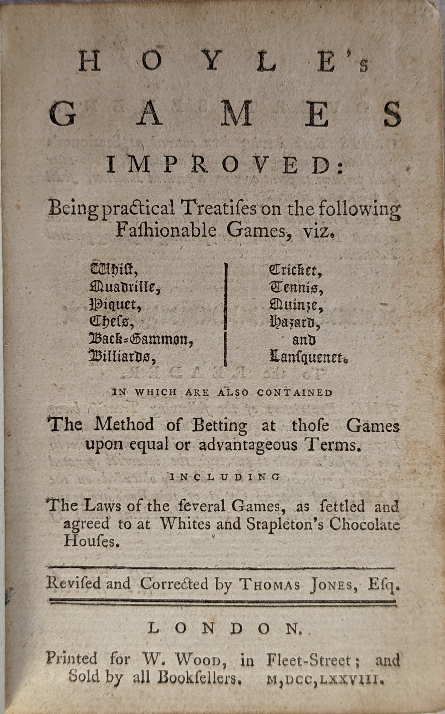

 |
Title: |
HOYLE’s | GAMES | IMPROVED: | Being practical Treatiſes on the
following | Faſhionable Games, viz. | [six lines to left of rule] Whiſt, | Quadrille, | Piquet, | Cheſs, |
Back=Gammon, | Billiards, | [six lines to right of rule] Cricket, | Tennis, | Quinze, | Hazard, | and |
Lanſquenet. | IN WHICH ARE ALSO CONTAINED | The Method of Betting at those Games
| upon equal or advantageous Terms. | INCLUDING | The Laws of the ſeveral
Games, as ſettled and | agreed to at Whites and Stapleton's Chocolate |
Houſes. | [rule] | Reviſed and Corrected by Thomas Jones, Eſq. | [oxford rule] | LONDON. | Printed for W. Wood, in Fleet-Street; and | Sold by all Bookſellers.
M,DCC,LXXVIII. |
| Collation: |
18o: a6 B–T6 [$½ (−B1,C2,F3) signed]; 114 leaves, pp. [i–ii] iii–xi [xii], [1–3] 4–81 [82–85] 86–105 [106–109] 110–149 [150–152] 153–207 [208–209] 210–211 [212–214] 215–216 [misprinting 137 as 237, 155 as 153] |
| Section Title Whist |
A SHORT | TREATISE | on the GAME of | WHIST. | CONTAINING | The LAWS
of the GAME: | AND ALSO, | Some Rules whereby a Beginner may, with due Attention | to them, obtain to the
playing it well. | Calculations for thoſe who will bet the Odds on any | Points of the Score of the
Game then Playing and depending. | Cases ſtated, to ſhew what may be effected by a very | good Player in
critical Parts of the Game. | References to Cases, viz. at the End of the Rule, you | are directed how to find them. | Calculations, directing, with moral Certainty, how | to play well any Hand or Game,
by ſhewing the Chances | of your Partner’s having one, two, or three certain
Cards. | With Variety of Cases added in the Appendix. | [rule] | By Edmond Hoyle, Gent. | [rule] | The Laws of the Game, and an Explanation of the
Cal-|culations which are neceſſary to be underſtood by thoſe | who would
play it well. | AND ALSO | A Dictionary for WHIST, which reſolves almoſt | all the critcal Caſes that may
happen at the Game. | To which is added, | An ARTIFICIAL MEMORY: | Or, An eaſy Method of
aſſiſting the Memory of thoſe | that play at the Game of WHIST. |
| Section Title Quadrille |
[row of type orn] | A SHORT | TREATISE | on the GAME of | QUADRILLE;
| SHEWING | The Odds of winning or loſing moſt Games that | are commonly played, either by calling a King, | or by playing Sans Prendre. | To which are added, | The LAWS of the GAME. | The Eighth Edition. | By Edmond Hoyle, Gent. | [row of type orn] |
| Section Title Piquet and Chess |
[row of type orn] | A SHORT | TREATISE | On the GAME of | PIQUET; |
DIRECTING, | With moral Certainty, how to diſcard any Hand | to Advantage,
by ſhewing the Chances of taking | in any one, two, three, four, or five
certain | Cards. | Computations for thoſe who Bet their | Money at the Game. | ALSO | The LAWS of the GAME. | To which are Added, | Some Rules and Observations | for playing well at CHESS. | The Eighth Edition. | By Edmond Hoyle, Gent. | [row of type orn] |
| Section Title Backgammon |
[row of type orn] | A SHORT | TREATISE | On the GAME of |
BACK-GAMMON. | CONTAINING, | [12 lines to left of rule] A Table of the thirty-ſix | Chances with Directions | how to find out the
Odds of | being hit, upon ſingle or | double Dice. | Rules whereby a
Beginner | may, with due Attention | to them, attain playing it | well. |
The ſeveral Stages for carry-|ing your Men home, in | order to loſe no
Point. | [12 lines to right of rule] How to find out who is for-|wardeſt to
win a Hit. | Caſes ſtated for Back-Games, | with Directions how to play |
for one. | Caſes ſtated, how to know | when you may have the bet-|ter of
ſaving a Gammon by | running. | Variety of Caſes of Curioſity | and
Inſtruction. | The Laws of the Games. | The Ninth Edition. | By Edmond Hoyle, Gent. | [row of type orn] |
| Contents: |
Signature (Page) Reference |
Contents |
Signature (Page) Reference |
Running Titles |
| a1r (i) |
title |
|
|
| a1v (ii) |
‘ADVERTISEMENT. | [...] | To the READER. | [...] | W. Wood.’ |
|
|
| a2r–a6r (iii–xi) |
‘[row of type orn] | CONTENTS. | [...]’ |
a2v–a6r (iv–xi) |
‘The CONTENTS’ |
| a6v (xii) |
blank |
|
|
| B1r (1) |
section title whist |
|
|
| B1v (2) |
blank |
|
|
| B2r–H5r (3–81) |
‘[oxford rule] | A SHORT | TREATISE | On the GAME of | WHIST. |
[...]’ |
B2v–H5r (4–81) |
‘A ſhort Treatise on | the Game of WHIST.’ |
| H5v (82) |
blank |
|
|
| H6r (83) |
section title quadrille |
|
|
| H6v (84) |
blank |
|
|
| I1r–K5r (85–105) |
‘[oxford rule] | A SHORT | TREATISE | On the GAME of | QUADRILLE. |
[...]’ |
I1v–K5r (86–105) |
‘A ſhort Treatise on | the Game of QUADRILLE.’ |
| K5v (106) |
blank |
|
|
| K6r (107) |
section title piquet and chess |
|
|
| K6v (108) |
blank |
|
|
| L1r–N2v (109–136) |
‘[double rule] | A | TREATISE | On the GAME of | PIQUET. |
[...]’ |
L1v–N2v (110–136) |
‘A Treatise on PIQUET.’ |
| N3r–O3r (137–149) |
‘[double rule] | SOME | Rules and Observations | FOR | Playing well at CHESS. | [...]’ |
N3v–O3r (138–149) |
‘Rules and Observations | for Playing at CHESS.’ |
|
|
on N5r (141) |
‘For Playing at CHESS.’ |
| O3v (150) |
blank |
|
|
| O4r (151) |
section title backgammon |
|
|
| O4v (152) |
blank |
|
|
| O5r–R4v (153–188) |
‘[oxford rule] | A SHORT | TREATISE | On the GAME of | BACK-GAMMON. |
[...]’ |
O5v–R4r (154–187) |
‘A ſhort Treatise on the | Game of BACK-GAMMON.’ |
|
|
on O6v (156) |
‘A ſhor Treatise ton’ |
|
|
on P2v (160) |
‘A ſhort Treatise on tho’ |
|
|
on Q3r (173) |
‘A ſhort Treatise on the’ |
|
|
on Q4v–Q5r (176–177) |
‘Game of BACK-GAMMON. | A ſhort Treatise on the’ |
|
|
R4v (188) |
‘A ſhort Treatise, &c.’ |
| R5r–S3r (189–197) |
‘[double rule] | THE GAME OF | BILLIARDS, | WITH THE | RULES and
ODDS: | Together with the different Kinds of Games | which are play'd on a
Billiard Table. | [...]’ |
R5v–S3r (190–197) |
‘The Game of BILLIARDS.’ |
| S3v–S5r (198–201) |
‘[double rule] | THE | LAWS OF CRICKET | [...]’ |
S4r–S5r (199–201) |
‘The Game of CRICKET.’ |
| S5v–T2r (202–207) |
‘THE | GAME OF TENNIS. | [...]’ |
S6r–T2r (203–207) |
‘The Game of TENNIS.’ |
| T2v (208) |
blank |
|
|
| T3r–T4r (209–211) |
‘THE | GAME OF HAZARD.. | [...]’ |
T3v–T4r (210–211) |
‘The Game of HAZARD.’ |
| T4v (212) |
blank |
|
|
| T5r (213) |
‘THE | GAME OF QUINZE. | [...]’ |
|
|
| T5v (214) |
blank |
|
|
| T6r–T6v (215–216) |
‘THE | GAME OF LANSQUENET. | [...]’ |
T6v (216) |
‘The Game of LANSQUENET.’ |
| Catchwords: |
B6r(11) Game [Game:]; M4r(127) mak [make]; R2v(184) wards [ward;] |
| Press Figures: |
a4r(i):5; B6r(i):4; B6v(o):3; F6r(i):2; F6v(o):4; H4r(i):2; I4v(o):1; M6r(i):1; N6v(o):4; P3v(i):2; Q2v(o):5; R6r(i):5; R6v(o):1 |
| Publisher: |
“W. Wood” |
| Notices: |
1778-04-11 The Ipswich Journal: Advertisement by bookseller Philip Deck of Bury St. Edmunds for "Hoyle's
Games improved by Thomas Jones, Esq; 2s." |
| Price: |
2s. (advertisement) |
| References: |
ESTC T128016, Horr 801, Jessel 1024, Rather 58 |
| Copies Seen: |
ABu [SB 7904 Hoy 1]; BFl [I.795/HOYL (b1124961)]; L [1568/1568] (ECCO); O [Jessel f.610]; O [Murray f.25]; Copisarow; NvLN [GV1227.H68 1778]; OCl [789.87H F78J]; PPL [Iu Hoyl Log.2214.D]; TNJ [GV1227.J8 1778 c.1]; TNJ [GV1227.J8 1778 c.2]; Levy [1036] |
| Other Copies: |
C [H.1.56]; Ct [H.1.56]; HAG [KW 363 D 41]; LT [Wb 743]; NjP [42485.479.14]; PRTup [ZBR 828.6 Hoyle.] |
| Notes: |
Thomas Jones and W. Wood are ficticious names. Thomas Jones recalls the actual
editor Charles Jones, while W. Wood is nowhere to be found in records of the London
book trade. The
book is a straight copy of the late editions of the Osborne Hoyles, and clumsily plagiarizes
the new material from Jones.1. See my blog essay “Hoyle in the Public Domain, Yet Pirates Persist”. It seems odd that Philip Deck
would advertise a piracy so blatently. His later advertisement of 1779-11-20 offers
an unidentified edition of Hoyle's Games for 1s. 6d. |